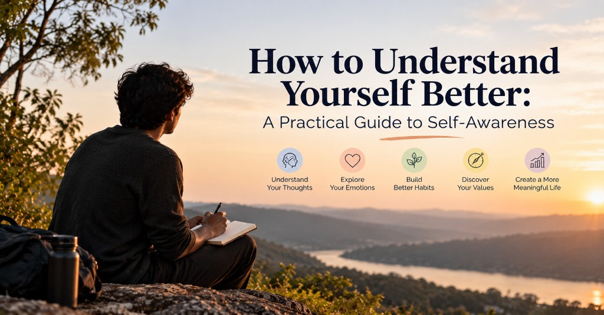

How to Understand Yourself Better: A Practical Guide to Self-Awareness

Have you ever wondered why you react a certain way in difficult situations, repeat the same mistakes, or struggle to make decisions even when you know what you want? Sometimes, the biggest challenge in life is not understanding other people but understanding ourselves.
Learning how to understand yourself better is an important step toward building healthier relationships, making confident decisions, managing your emotions, and experiencing personal growth. Yet, many people spend years following expectations, routines, and habits without questioning whether those choices genuinely reflect who they are.
Self-awareness helps you recognize your thoughts, understand your emotions, identify your behavioral patterns, and discover what truly matters to you. It allows you to move through life with greater clarity rather than reacting automatically to every situation.
The good news is that self-awareness is not something you either have or lack. It is a skill that you can develop through consistent self-reflection, observation, and practical daily exercises.
In this guide, you will discover how to understand yourself better, identify your strengths and weaknesses, recognize emotional patterns, and begin your self-discovery journey with simple exercises you can practice every day.
What Does It Mean to Understand Yourself Better?
Understanding yourself means becoming aware of your thoughts, emotions, beliefs, values, habits, motivations, and the reasons behind your decisions.
It involves recognizing not only what you do but also why you do it.
For example, imagine that you become irritated whenever someone criticizes your work. Your immediate reaction might be to defend yourself or become silent. However, deeper self-reflection may reveal that you associate criticism with failure or fear that others will consider you incapable.
When you understand the reason behind your reaction, you gain the opportunity to respond differently.
Self-awareness generally involves four important areas:
- Emotional awareness: Recognizing what you feel and understanding what triggers those feelings.
- Behavioral awareness: Identifying habits, reactions, and repeated patterns in your daily life.
- Mental awareness: Observing your thoughts, assumptions, and beliefs without automatically accepting them as facts.
- Personal awareness: Understanding your values, strengths, weaknesses, priorities, and long-term goals.
These areas work together to help you develop a clearer picture of who you are and how you interact with the world.
Why Is Self-Awareness Important for Personal Growth?
Self-awareness is more than simply thinking about yourself. It helps you make conscious choices instead of living entirely through automatic reactions.
Here are some important ways self-awareness can improve your life.
1. It Helps You Understand Your Emotions
Many people know when they feel angry, anxious, disappointed, or unhappy, but they do not always understand why they feel that way.
For example, frustration at work might actually come from feeling unappreciated. Irritation with a friend might reflect an unspoken expectation rather than something the friend intentionally did.
Understanding your emotions allows you to identify their possible causes and communicate your needs more clearly.
2. It Improves Decision-Making
Sometimes, we make decisions to satisfy other people rather than ourselves. We choose careers because of family expectations, pursue goals because society considers them successful, or avoid opportunities because we fear judgment.
Self-awareness helps you distinguish between decisions based on your genuine values and those driven primarily by external pressure.
This does not mean ignoring other people's advice. It means considering that advice while remaining conscious of your own priorities.
3. It Helps You Recognize Repeated Patterns
Do you repeatedly enter the same kinds of relationships? Do you start projects enthusiastically but struggle to finish them? Do you avoid difficult conversations until problems become bigger?
Repeated behaviors often contain useful information about your needs, beliefs, fears, or routines.
Recognizing these patterns helps you identify what may need to change.
4. It Builds Healthier Relationships
When you understand your emotional triggers, communication style, and personal boundaries, you become better equipped to handle disagreements.
Instead of assuming that someone has intentionally hurt you, you can pause, examine your interpretation, and ask questions.
Self-awareness also helps you take responsibility for your behavior without accepting responsibility for everything that happens around you.
5. It Encourages Meaningful Personal Growth
Personal growth begins when you honestly recognize where you are today.
You cannot effectively improve a habit you have not noticed or work toward a goal you have never questioned.
Self-awareness helps you identify the difference between the person you are today and the person you want to become.
How to Understand Yourself Better: 7 Practical Steps
You do not need to make dramatic changes to begin understanding yourself. Small, consistent practices can help you become more aware of your inner experiences.
1. Observe Your Thoughts Without Judging Them
Your thoughts influence how you interpret situations, but not every thought represents an objective truth.
For example, after making a mistake, you might think, "I am not good enough." If you accept this thought automatically, it can affect your confidence and future decisions.
Instead, practice observing your thoughts as mental experiences rather than unquestionable facts.
Ask yourself:
- What am I thinking about right now?
- What evidence supports this thought?
- Am I assuming something without enough information?
- Would I speak this way to someone I care about?
- Is this thought helping me respond constructively?
The goal is not to eliminate negative thoughts. It is to understand them without allowing them to control every decision you make.
Practical exercise: Spend five minutes each day writing down three thoughts that repeatedly appear in your mind. Notice whether they are encouraging, critical, fearful, or focused on the future.
Over time, you may recognize recurring beliefs that influence your behavior.
2. Learn to Identify and Understand Your Emotions
Understanding your emotions is an essential part of self-awareness. However, emotional awareness requires more than labeling yourself as happy or sad.
Try to identify the specific emotion, its intensity, and the circumstances surrounding it.
For instance, what you initially describe as anger might include disappointment, embarrassment, jealousy, or fear.
When a strong emotion arises, ask yourself:
- What exactly am I feeling?
- When did this feeling begin?
- What happened immediately before it appeared?
- What meaning am I giving this situation?
- What do I need right now?
- What response would be helpful rather than impulsive?
Remember that emotions provide information, but they do not always provide a complete or accurate explanation of a situation.
You can acknowledge your feelings while still examining the facts.
Practical exercise: Use a simple emotion journal with four columns: situation, emotion, intensity, and response. Record one meaningful emotional experience each day.
After a week, review your entries and look for recurring triggers.
3. Identify Your Core Values
Your values are the principles that influence what matters most to you. They may include honesty, freedom, family, creativity, stability, learning, compassion, or independence.
When your decisions align with your values, you may experience a stronger sense of purpose. When your actions repeatedly conflict with them, you may feel dissatisfied even when everything appears successful from the outside.
To identify your values, consider these questions:
- What qualities do I respect most in other people?
- Which moments in my life have made me feel genuinely proud?
- What would I continue doing even if nobody praised me?
- What am I unwilling to compromise on?
- What does a meaningful life look like to me?
- Which goals am I pursuing mainly because others expect me to?
Practical exercise: Write down ten values that matter to you. Narrow the list to five, then choose your top three.
For each value, identify one action that would help you express it in everyday life.
For example, if learning is a core value, you might dedicate fifteen minutes each day to reading or developing a skill.
Your values can change as your experiences and priorities evolve. Review them periodically rather than treating them as permanent rules.
4. Examine Your Habits and Behavioral Patterns
Your daily habits can reveal more about your priorities than your intentions alone.
You might say that health is important to you while consistently sacrificing sleep. You might value meaningful relationships while spending very little time connecting with the people you care about.
These contradictions are not reasons to criticize yourself. They are opportunities to understand the factors influencing your behavior.
Ask yourself:
- Which habits improve my mood and energy?
- Which activities leave me feeling drained?
- What do I repeatedly postpone?
- What situations cause me to act differently from how I intended?
- What do I do when I feel bored, anxious, or uncomfortable?
- Which behaviors support my long-term goals?
Practical exercise: Choose one recurring habit you want to understand.
For seven days, record when it occurs, what happens immediately beforehand, how you feel, and what happens afterward.
For example, if you repeatedly scroll through social media when you intend to work, examine whether the behavior follows boredom, uncertainty, fatigue, or a difficult task.
Once you understand the pattern, you can experiment with a more helpful response.
5. Discover Your Strengths and Areas for Improvement
Understanding yourself better means recognizing both your strengths and your limitations.
Some people focus excessively on their weaknesses and overlook the abilities that help them succeed. Others recognize their strengths but avoid examining habits that create difficulties.
A balanced self-assessment considers both.
Start by asking:
- What activities come naturally to me?
- What do people frequently ask me for help with?
- Which challenges have I handled successfully?
- What skills would I like to improve?
- What feedback do I hear repeatedly?
- What situations make me feel less confident?
You can also ask trusted friends or colleagues to describe two strengths they see in you and one area where you could improve.
Listen with curiosity rather than treating every opinion as a definitive judgment.
Other people can notice patterns that you overlook, but their perspectives are not the complete truth about you.
Practical exercise: Create two lists: "My Strengths" and "Areas I Want to Develop." Add specific examples under each heading.
Instead of writing "I am bad at communication," try "I sometimes avoid expressing disagreement because I worry about conflict." The second statement identifies a behavior you can work on.
6. Understand What Motivates Your Decisions
Not every decision comes from a clearly understood reason. Sometimes, we pursue something because we want approval, fear rejection, seek security, or want to prove ourselves.
These motivations are not automatically wrong. The important thing is to recognize them.
Imagine that you want to become successful in your career. Ask yourself what success actually means to you.
Is it financial independence? Recognition? Creative freedom? Security for your family? The ability to make your own decisions?
Different motivations can lead to very different choices.
Try asking yourself "Why?" several times when examining an important goal.
For example:
- Why do I want a promotion?
- Because I want to earn more money.
- Why is earning more money important?
- Because I want financial security.
- Why does financial security matter to me?
- Because I want greater freedom and fewer worries about the future.
This process can help you move beyond surface-level goals and identify the needs underneath them.
Practical exercise: Choose one major goal you are currently pursuing. Write down three reasons you want it, then consider which reasons reflect your own values and which are influenced by comparison or external expectations.
7. Make Time for Regular Self-Reflection
Self-awareness develops through repeated observation. You do not need to analyze every thought or spend hours examining your past.
A few minutes of structured reflection can help you notice changes in your feelings, decisions, and behavior.
Choose a time that works for you, such as before bed, after a walk, or at the end of your workday.
Ask yourself:
- What went well today?
- What challenged me?
- When did I feel most like myself?
- When did I act against my values?
- What did I learn about myself?
- What is one thing I want to approach differently tomorrow?
Try to answer honestly without turning the exercise into a list of personal failures.
The purpose of self-reflection is to gain understanding, not to find new reasons to criticize yourself.
10 Self-Reflection Questions to Help You Understand Yourself Better
Sometimes, asking the right questions can reveal patterns that ordinary routines keep hidden.
Use the following questions as prompts for journaling, quiet thinking, or a weekly personal review.
- What makes me feel genuinely happy? Identify the activities, relationships, and experiences that bring you satisfaction beyond temporary excitement.
- What situations consistently drain my energy? Consider whether the cause is workload, conflict, unrealistic expectations, or a lack of recovery time.
- What am I afraid other people will think about me? Explore how fear of judgment may influence your decisions.
- Which habits am I repeating even though they no longer serve me? Look for behaviors that create short-term comfort but long-term frustration.
- When do I feel most confident and capable? Identify the environments and activities where your strengths become visible.
- What situations trigger strong emotional reactions in me? Consider whether certain events connect with unmet needs, past experiences, or personal insecurities.
- Am I living according to my values or someone else's expectations? Examine your career choices, relationships, priorities, and definition of success.
- What do I keep postponing, and why? Distinguish between a genuine lack of interest, practical obstacles, fear, and uncertainty.
- What would I change if I were less afraid of making mistakes? Use your answer to identify a small step toward something meaningful.
- What kind of person do I want to become? Focus on the qualities you want to develop, not only the achievements you want to collect.
You do not need to answer all ten questions at once. Choose one each day and write for five to ten minutes.
Revisit your answers after a month to see whether your understanding of yourself has changed.
Daily Self-Awareness Exercises You Can Practice in 10 Minutes
If you want to make self-awareness part of your everyday life, begin with a simple routine.
You can adapt the following exercises to your schedule and personal preferences.
Morning: Set an Intention (2 Minutes)
Before checking your phone or starting work, ask yourself:
- How am I feeling this morning?
- What matters most to me today?
- How do I want to respond when something becomes difficult?
Choose one intention, such as being patient, communicating honestly, or staying focused on an important task.
During the Day: Pause and Observe (1 Minute)
When you notice a strong emotional reaction, pause before responding.
Take a few comfortable breaths and observe what is happening in your body and mind.
Ask yourself what you are feeling and what response would best serve the situation.
You do not have to suppress the emotion or immediately solve the problem. Sometimes, simply noticing the reaction is a useful first step.
Evening: Reflect and Record (5 Minutes)
Write down three things:
- One situation that made you feel good.
- One situation that challenged you emotionally.
- One lesson you learned about yourself.
Look for patterns over time rather than judging an individual day.
Weekly: Review Your Patterns (2 Minutes)
At the end of the week, review your notes.
Ask yourself what repeatedly improved your well-being, what created unnecessary stress, and which behavior you would like to change.
Choose one small action for the following week.
The routine is intentionally simple. Consistency is more useful than creating an elaborate system that becomes difficult to maintain.
How to Understand Yourself Better in Relationships
Relationships can reveal aspects of ourselves that are difficult to notice when we are alone.
The way you respond to disagreement, affection, criticism, boundaries, and uncertainty can offer clues about your expectations and emotional needs.
For example, you may notice that you avoid expressing your needs because you worry about disappointing someone. Alternatively, you might become defensive when you feel misunderstood.
Rather than labeling yourself as difficult or overly sensitive, examine the situation more closely.
Consider these questions:
- Do I communicate my needs clearly?
- Can I disagree with someone without feeling that the relationship is threatened?
- Do I respect other people's boundaries while maintaining my own?
- Do I expect others to understand feelings I have not expressed?
- Do I take responsibility for my reactions without blaming myself for everything?
Self-awareness in relationships does not mean accepting all criticism or tolerating unhealthy behavior.
It means understanding your own contribution to a situation while recognizing that other people are responsible for their choices, too.
Healthy relationships require mutual respect, honest communication, and boundaries.
Common Mistakes to Avoid During Your Self-Discovery Journey
The process of understanding yourself can become frustrating if you approach it with unrealistic expectations.
Here are some common mistakes to avoid.
1. Overthinking Instead of Observing
Reflection becomes unhelpful when you repeatedly analyze the same problem without gaining new information or taking action.
If you find yourself stuck in a loop of self-criticism, shift your attention toward a specific question: What do I know, what am I assuming, and what small step can I take?
2. Judging Yourself for Every Mistake
Self-awareness is not about becoming perfect. Everyone experiences conflicting emotions, makes poor decisions, and develops habits they later want to change.
Treat mistakes as information that can guide improvement rather than proof that something is fundamentally wrong with you.
3. Comparing Your Journey With Other People
People have different experiences, responsibilities, personalities, and starting points.
Comparing your progress with someone else's can distract you from understanding your own needs.
Focus on whether your choices are becoming more intentional and whether your behavior increasingly reflects your values.
4. Expecting Immediate Answers
You may not discover your core values, motivations, or long-term goals in a single journaling session.
Some aspects of yourself become clearer through new experiences, difficult decisions, and changing circumstances.
Give yourself permission to remain uncertain while continuing to learn.
5. Ignoring Feedback From Others
Self-reflection is valuable, but your perspective is not the only source of information about your behavior.
If several trusted people independently mention the same pattern, consider whether there is something worth exploring.
You do not have to accept every opinion. Use feedback as an invitation to investigate rather than an automatic verdict.
6. Turning Self-Improvement Into Self-Rejection
Personal growth should not depend on believing that your current self is inadequate.
You can appreciate who you are while developing new skills, changing habits, and addressing behaviors that no longer serve you.
Self-awareness works best when honesty is combined with self-compassion.
How Long Does It Take to Understand Yourself Better?
There is no fixed timeline for developing self-awareness.
You may notice certain emotional triggers or habits within a few days of journaling. Understanding deeper motivations, long-standing beliefs, or relationship patterns can take considerably longer.
Progress also depends on the questions you explore, the experiences you encounter, and your willingness to examine uncomfortable information.
Instead of measuring progress by how quickly you discover a complete explanation of yourself, look for practical changes.
Are you recognizing emotions earlier? Are you making decisions more intentionally? Are you communicating your needs more clearly? Are you noticing repeated behaviors before they create the same problems?
These changes can indicate that your self-awareness is becoming more useful in everyday life.
If self-reflection consistently leads to intense distress, persistent rumination, or difficulty functioning, consider speaking with a qualified mental health professional. You do not have to work through every difficult experience alone.
Frequently Asked Questions About Self-Awareness
1. How can I understand myself better?
Start by observing your thoughts, emotions, habits, values, and decisions without immediately judging them. Use journaling, daily self-reflection questions, and feedback from trusted people to identify recurring patterns. Focus on one area at a time and turn your observations into small, practical changes.
2. What are the signs of low self-awareness?
Possible signs include difficulty identifying your emotions, repeatedly overlooking the effects of your behavior on others, struggling to explain your decisions, or noticing the same problems recurring without understanding why. These signs are not a diagnosis; they are areas you can explore through reflection and feedback.
3. What are the best self-reflection exercises for beginners?
Beginners can start with an emotion journal, a daily review of their decisions, a list of personal values, and a weekly habit assessment. Answering one thoughtful question each day can also help you notice patterns without making the process overwhelming.
4. How do I understand my emotions better?
Name the emotion as specifically as possible, identify what happened before it appeared, and examine the thoughts and interpretations associated with it. Notice what you need and consider how you can respond constructively. Remember that feelings are real experiences, but your first explanation of their cause may need further examination.
5. Can self-awareness improve confidence?
Self-awareness can support confidence by helping you recognize your strengths, understand your limitations, and make decisions that reflect your values. It can also help you respond to mistakes more constructively. Confidence grows through experience and action as well as reflection.
6. What is the difference between self-awareness and self-discovery?
Self-awareness is the ongoing ability to recognize and understand your thoughts, emotions, behaviors, and motivations. Self-discovery is the broader process of exploring who you are, what matters to you, and what kind of life you want to build. The two processes often support each other.
7. Can I develop self-awareness without meditation?
Yes. Meditation is one possible method, but it is not essential. Journaling, mindful pauses, reflective conversations, habit tracking, and reviewing your decisions can also help you understand yourself better.
Final Thoughts: Understanding Yourself Is a Lifelong Practice
Learning how to understand yourself better is not about discovering a single, permanent definition of who you are. It is about becoming more aware of the thoughts, emotions, beliefs, and habits that influence your everyday life.
As you gain this awareness, you can begin to recognize patterns that once went unnoticed, question assumptions that no longer serve you, and make choices that better reflect your values.
Start small. Spend five minutes reflecting on your day, write down one recurring emotion, or question a habit you have followed for years without examining it.
You do not need to change everything at once. The goal is to understand yourself a little more clearly and use that understanding to live more intentionally.
Your self-discovery journey begins with one honest question: Am I living according to what truly matters to me, or am I simply following the patterns I have always known?
Take a moment to reflect on your answer. It may be the beginning of meaningful personal growth.
Back to the blog